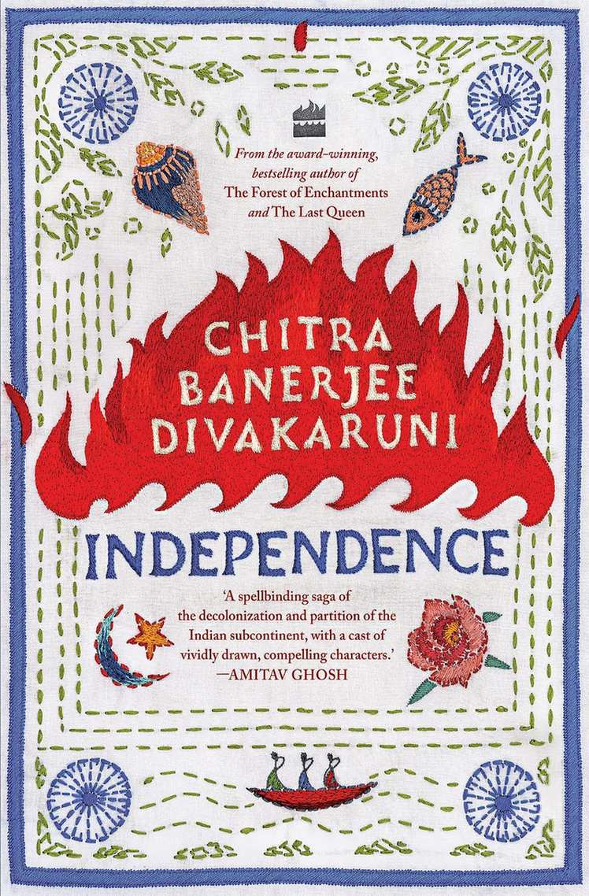

Chitra Banerjee Divakaruni

This review is the initial impression of our editorial team after reading approximately one-tenth of the book.
DISCLAIMER: The opinions expressed in the Early Review might not necessarily have a correlation with the Final Review of the book.
The latest work by the author of 'The Forest of Enchantments' and 'The Last Queen' is
set on the cusp of India's independence. The novel begins in the idyllic setting of Ranipur, a village in
Bengal 'safe from the rising turbulence in the country'. Nabakumar Ganguly is a doctor who runs a clinic
in Calcutta with Dr. Abdullah but the former is facing financial difficulties because of his magnanimity
towards poorer clients, much to the disapproval of his pragmatic wife Bina. They should be thinking of the
dowry for their three daughters --- Priya, Jamini, and Deepa. The youngest of the three, Priya,
idolizes her father and wants to follow in her father's footsteps. Nabakumar's friend Somnath gives him
the necessary push to allow her to appear for the exam. Deepa is her mother's favourite and enjoys most
of the privileges while Jamini is dutiful, the archetypal less favoured middle child. Chitra Banerjee
Divakaruni novel is a homage to Sarat Chandra and 'Sahitya Samrat' Bankim Chandra and yet she manages
to navigate through the plot effortlessly with an immediacy that is the hallmark of the greatest writers
of our generation. There are numerous Indian writers in English who are great at storytelling but there
are few who manage the art with such a deft touch. Even in the bucolic refuge of Ranipur, readers are
aware of the ominous and underlying tremors occurring in Calcutta and the rest of the country which will
surface soon with cataclysmic consequences. The rest of the novel promises to be a page turner and
possibly yet another in the series of Divakaruni's masterpieces.